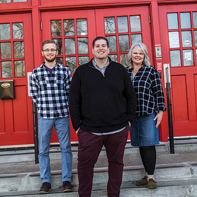

Performance anxiety
Tulsa teachers face an uphill battle

Valerie Grant
Betsy DeVos, President Trump’s pick for education secretary, underwent her senate confirmation hearing last month and the sounds of scratching heads reverberated from both sides of the party aisle.
In the hearing, Devos defended the presence of guns in schools to protect against “grizzlies,” seemed oblivious to the debate over standardized testing, and showed conviction only toward the idea of school vouchers. Oregon Senator Jeff Merkley described DeVos’ appointment as handing over public education to a person “who wants to destroy [it].”
Scratched heads gave way to nervous sweat in Oklahoma, where we’re already experiencing an education crisis.
Oklahoma faces an $870 million budget shortfall in 2017. Teachers’ salaries have been stagnant since 2008, meaning they often leave for higher pay in surrounding states. Classroom sizes are well over the recommended limits, bus rides for students have been slashed, and although Tulsa Public Schools maintain a five-day school week, at least 100 Oklahoma districts have cut to four.
Those are just the issues we openly talk about.
A Velvet Noose
“I really enjoy my job, which is why I feel it’s my civic duty to talk about it. But I don’t want to lose my car for buying gas,” said a current TPS teacher who agreed to speak with me on condition of anonymity.
“I’ve been told my grades weren’t good enough ... with the implication that I should change Ds to Cs,” he said. He said higher graduation rates often lead to bonuses for superintendents—although TPS Superintendent Deborah Gist famously donated her 2016 bonus back to TPS.
Apart from what he described as winking and nudging towards grade falsification by some principals, this teacher told me there is an over-reliance on Individualized Education Plans (IEPs) in an effort to boost graduation rates.
IEPs are a list of modified expectations given to students with special needs. Teachers may change their evaluation methods with regards to the students’ abilities and needs, and may become ever lenient on criteria like due dates for assignments.
IEPs might seem like a compassionate counterweight to the draconian one-size-fits-all application of standardized testing, but the anonymous teacher said there is an incentive to put students on IEPs using the narrowest criteria. IEPs can be assigned for students with emotional stress. Emotional disturbance is a true impediment to learning, but its broad definition leads to easy tweaking by teachers eager to place their “problem students” on the path from Ds to Cs.
TPS district spokesperson Emma Garrett Nelson defended IEPs and explained the process of determining if a student is a suitable candidate for one.
“In order for a student to qualify for an Individualized Education Program, he or she is evaluated by a school psychologist, and the IEP team determines whether the student meets eligibility requirements,” Nelson said. “IEPs are developed to meet the unique needs of each student and give them the supports they need to learn and grow. Students with IEPs have a wide range of needs from very mild disabilities to significant disabilities that impact every facet of their day-to-day experiences. The IEP teams make the decisions about how best to help each child be successful.”
“There’s a whole lot of paperwork to get on an IEP, and there’s a whole lot of paperwork to get off one,” the anonymous teacher said. What he described is a velvet noose of sorts in which students have to study harder and jump through more hoops in order to overcome the handicap of lowered expectations.
“Our priority as educators is to serve the best interests of our children and families, and some students need the highly specialized supports of an IEP,” Nelson said. “An IEP team includes a school administrator, a special education teacher, a general education teacher, a school psychologist, and related service providers such as occupational therapists, physical therapists, and speech/language pathologists). At times, the parent is also part of this team. The team works to align services and supports for each student that match his or her ability with academic rigor. We are also under monitored by the state and have yearly data goals that guide our percentages of students served at various levels. We also have seven special education coordinators who oversee a network of schools and regularly review IEPs to ensure that services are consistent and appropriate for the student.”
Former Rogers and Union teacher Jon Paul Pope believes IEPs are a disservice to students, at least in how they’re currently implemented.
“They’re lowering the bar of rigor in the classroom to ensure student success,” Pope said. When asked for examples, Pope said teachers will routinely give IEP students multiple extensions on deadlines while ignoring spelling, grammar and other mechanical errors during the grading process, focusing on “content” instead.
Sometimes teachers will lower the evaluation methods of their entire class to meet those of their population placed on IEPs, according to Pope. He said students pick up on this and will anticipate passing grades in spite of their decreasing effort.
The added paperwork of IEPs and mandatory meetings with IEP students’ parents is also a strain on underpaid teachers who grapple with bursting class sizes and fill roles outside of their job description—DHS’s budget has been gutted in Oklahoma, and our teachers are picking up the slack where school counselors once helped. “I’ve seen teachers keep bread, peanut butter, and jelly in their rooms for kids that look malnourished,” the anonymous teacher told me.
Then there are Teacher-and-Leader Effectiveness tests (TLEs), which add an extra level of stress to teachers. TLEs grade teachers according to their students’ performances, and these grades are hung like a hammer over their professional heads.
“I have been to professional development meetings with teachers and administrators, and they’ll show teacher ratings and people will see someone’s score and go ‘ooooooh,’” the teacher said. According to him, this dystopian rating system “primes the thinking of that colleague, and you’ll speak to and think of them through the lens of that rating.”
According to Pope, “data is poisoning everything in education.” The most debated use of data is standardized testing.
The great debate over standardized testing began when George W. Bush signed the bipartisan No Child Left Behind Act into law in 2002. The law asserted national student success requirements and compelled states to issue standardized tests in order to receive federal funding. In 2015, a bipartisan Congress replaced most of the law with the Every Student Succeeds Act, which shifted focus on education from the federal to the state, but retained the required annual tests.
Many TPS schools employ benchmark tests (sometimes weekly) to assess students’ preparedness for the annual standardized tests. With so many tests, many argue that the time spent “teaching to the test”—as in narrowly focusing on teaching the content that will guarantee a passing grade—leaves no time for any learning beyond the scope of the test.
The charter option

I spoke with Tyler Kinshella, a former teacher at Union who currently teaches at Tulsa School of Arts and Sciences (TSAS). Kinshella told me he knew he wanted to leave Union when he went to a professional development meeting.
“They showed us this new curriculum and it was something they were very excited for, and one other teacher and I asked for it, and everyone else said, ‘no, it’ll take away my time to plan for the test.’”
TSAS is a charter school, and it secures a degree of freedom for its teachers in exchange for greater scrutiny and accountability through TPS. Privately funded charter schools are encouraged to experiment with curriculum and overall approach, but their charters are reviewed by TPS.
Kinshella is currently teaching a week-long class on the Syrian Civil War at TSAS, something he claims he’d never be able to do at Union, as none of it will be on the annual state test.
“I like taking a week to spend on this, as it’s something more valuable than the ancient Middle Eastern questions that will be on the test,” Kinshella said. “You can practice life skills with this, and help understand the refugee crisis.”
Eric Doss, the school’s executive director, says TSAS has shirked the allure of benchmark tests and instead employ their own metrics for assessing students’ overall education in addition to state test preparedness.
“There is a theory that if they’re taking a test that looks like the one at the end of the year, they’ll be prepared for that test,” Doss said. “We are more under the theory that if you over prepare by having them read a whole lot and spend their time in deep substantial thought, when they get to the end they’ll be prepared for that test as well. We’ve seen that to be the case.”
Doss says TSAS takes this approach not only to free up class time, but also to prepare their students for more than graduation.
“Ultimately our kids are going to step out of this building, and a lot of them will go to college, and a lot of them will go to trade school, and to the military, and some of our art students will go directly into the arts ... if all they know how to do is bubble in answers on a test, they’re not going to be the best college student, Marine, painter, or musician.”
TSAS also maintains a teacher-to-student ratio average of 18:1 and utilizes a “restorative justice” over a “zero tolerance” discipline policy. While the charter school takes a different tack to education and discipline than its public counterparts, middle school principal Dan Hahn said they “don’t stare down their nose” at other Tulsa Public Schools.
“TSAS does not operate on a system of superiority to traditional public schools or other charter schools,” Hahn said. “One of the driving ideas behind the charter school experiment is that they will try innovative things, they’ll work, and we can communicate them to larger contexts. So our success can benefit other schools in the same way other schools’ success can benefit ours.”
Although TSAS seems like one oasis in Oklahoma’s education desert, even their waters are subject to evaporation.
“Budget cuts at TSAS in many ways have affected us more than traditional public schools, as five percent of our state funding goes to TPS,” Hahn said. “And you hear about a lot of nationwide budget cuts resulting in closed charter schools.”
TSAS high school principal Liesa Smith told me charter schools run on skeleton crews of staff. Where TSAS will have one math teacher, a larger school may have seven, and any unavoidable changes to personnel can deeply affect the
entire school.
While TSAS is an appealing option for many students, it’s one of only six charter schools in the TPS system and competition is stiff. Around 500 students annually apply for TSAS, but enrollment currently caps at 375, and student applications are selected through a strict lottery process, where grades and discipline records are ignored.
In addition to enrollment often being a literal gamble, deregulation of and an over-reliance on charter schools can prove disastrous for a city.
Charter schools have flooded Detroit, Mich., and there are some 30,000 unfilled classroom seats. It’s bad enough that there are more charters than students, but test scores for Detroit’s charters are far below their nationwide counterparts. Only four percent of Detroit’s 8th graders perform at their grade level in reading and math. Schools open and close, seemingly randomly, and students are often cut off from decent schools by Detroit’s inadequate public transit. In spite of this, failing charters are allowed to expand, thanks to the work of the Great Lakes Education Project, a pro-charter lobby funded largely by Betsy DeVos and her husband, along with her in-laws, Amway founder Richard DeVos and his wife Helen.
The Payroll Solution
The subject of teacher pay looms heavily over the Oklahoma education discussion. A recent comparison between veteran Oklahoma teachers’ salaries and entry-level QuikTrip employees’ pay went viral on Facebook. It can take a teacher with a bachelor’s degree 11 years to reach the pay of a new hire at QuikTrip.
It’s hardly surprising, then, that over the past four years there has been a 16 percent decrease in Oklahoma high school graduates who choose to go into the education field, Nelson said. Additionally, the number of Oklahoma teacher candidates declined by 24 percent over the last eight years, and Tulsa has lost an average of 20 percent of its teachers over each of the last five years. With these declines, requests for and issuance of emergency teaching certificates in Oklahoma has skyrocketed.
I asked my anonymous teacher contact what could fix our state’s education problems and he instantly said “payroll.”
“When you drive competition for teachers, you get flat-out better teachers, and you are going to find that better teachers get you better test scores than anything else,” he said. “And when teachers don’t have to spend their time going from school to school looking for the perfect one that doesn’t exist, they can afford to stay put and work on the classroom culture where they are at.”
On this point, TPS spokesperson Emma Garrett Nelson agreed.
“We have a number of significant challenges, but the biggest one that all of our schools face is teacher recruitment and retention,” Nelson said. “We have a serious teacher shortage in our state due to the low salaries that make it incredibly difficult for our educators to put down roots and thrive here in Oklahoma.”
According to Nelson, the average budget of a first year teacher with a bachelor’s degree and one child breaks down as follows:
Monthly Income: $1,437.96
(after taxes, insurance, vision, dental)
Balance after rent and utilities: $297.96
Monthly child-raising cost: $552
(based on USDA Cost of Raising a Child Calculator)
Funds remaining: -$4.23 per person per day
“Our state leaders have to identify a viable permanent revenue stream to fund salary increases for our teachers,” Nelson said. “We cannot continue on like this and keep great educators here in our state.”
In the wake of Oklahomans rejection last November of a penny sales tax proposal to pay for teacher raises, a solution to the problem is more urgent than ever. In her recent 2017 State of the State address, Gov. Mary Fallin acknowledged the crisis, saying, “the pay raise may need to be phased in and it may be targeted, but it must be done.”
But where our state will find the money remains a vexing question mark.
For more from Mitch, read his profile of comedian Shawna Blake.
.jpg)
.jpg)